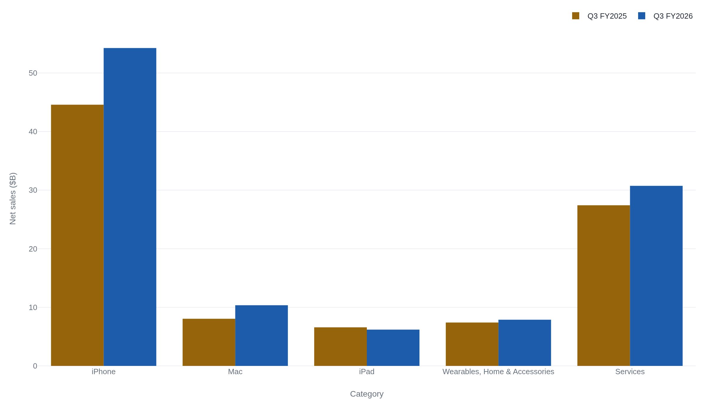
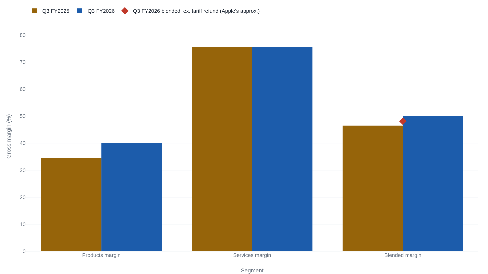
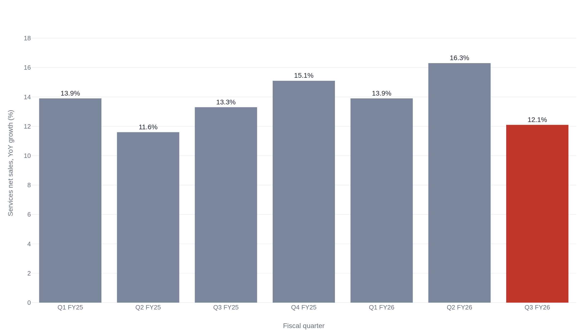

Apple's iPhone cycle masks a slowing services engine
An iPhone upgrade cycle and a $0.11-per-share tariff refund pushed Apple's June quarter to a $109.4 billion record, while Services growth slowed to 12.1 percent and missed Wall Street's estimate.
What the record quarter actually contained
Apple's fiscal third quarter, the three months ended June 27, 2026, produced $109.4 billion in net sales, up 16 percent from a year earlier and a June-quarter record.1 That number alone does not settle the question that decides how the stock should be read. Is Apple still, at bottom, a hardware company on a multi-year replacement cycle, or has it become the "services compounder" the bull case describes? The bull case rests on recurring, high-margin revenue sitting on top of an enormous installed base, growing independent of any single product cycle. This quarter's mix answers the question more precisely than its headline does. iPhone revenue rose 21.7 percent, the signature of an upgrade cycle.12 Diluted earnings per share and gross margin both got a one-time lift from tariff refunds Apple began receiving during the quarter, worth about $0.11 of EPS and roughly 2 percentage points of gross margin, by the company's own accounting.1 And Services, the segment the compounder story depends on, grew 12.1 percent, its slowest pace in four quarters, and came in below what analysts had modeled.1234 The record was real. The two things that produced most of it, an iPhone upgrade cycle and a tariff refund, are not recurring.
iPhone's upgrade cycle carried the quarter
Apple reports its results in two segments. Products is the four hardware lines: iPhone, Mac, iPad, and Wearables, Home & Accessories. Services is everything else, the recurring revenue that doesn't require selling a new device.1 In the June quarter, Products brought in $78.7 billion of the $109.4 billion total, 71.9 percent of net sales. Services brought in the remaining $30.7 billion, 28.1 percent, both shares computed from Apple's own category dollars.1
iPhone alone was $54.3 billion, about half of everything Apple sold this quarter, up 21.7 percent from $44.6 billion a year earlier.12 Apple's own 10-Q rounds that figure to 22 percent.2 Mac grew even faster in percentage terms, up 28.7 percent to $10.4 billion, which the 10-Q attributes to product mix.2 Wearables, Home & Accessories rose 6.5 percent, to $7.9 billion.12
Not every hardware line moved the same direction. iPad revenue fell 5.9 percent, to $6.2 billion, which Apple's 10-Q attributes to lower sales of iPad mini and iPad Air.2 Analysts had modeled iPad revenue near $6.9 billion; the actual figure was a decline, not merely a miss.5 Treating "hardware" as one story that improved this quarter erases that one hardware line shrank while two others, iPhone above all, did the work.

A margin lifted by Products and a one-time refund
Total gross margin reached 50.1 percent of net sales, up 3.6 points from 46.5 percent a year earlier.12 About 2 of those 3.6 points came from a single one-time item. Apple began receiving tariff refunds during the quarter and quantifies the effect itself, separately from the headline figures: a $0.11 boost to diluted EPS and approximately 2 percentage points of gross margin.1 That figure appears in the company's own earnings-release commentary, attributed to Apple, not to any analyst. The 10-Q, filed a day later, confirms tariff refunds contributed to the margin increase, but it does not restate the precise numbers. Its notes attribute the improvement in Products' own margin to "a different mix of products and tariff refunds," without repeating the $0.11 or the 2-point figure.2
The two segments do not carry the same margin. Products, the hardware, ran a 40.1 percent gross margin this quarter, up from 34.5 percent a year ago. Services ran 75.6 percent, flat year over year.2 A dollar of Services revenue is worth nearly twice a dollar of Products revenue to Apple's gross profit. On its own, that gap means any shift in revenue mix toward Services should lift the blended margin even if neither segment's own margin changes at all.
Mix moved the other way. Divide each segment's dollars by total net sales, using Apple's own category figures. Services' share of revenue fell from 29.2 percent a year ago to 28.1 percent this quarter. Products' share rose from 70.8 percent to 71.9 percent.1 The margin expansion happened despite an unfavorable mix shift, not because of a favorable one. What actually moved the number was Products' own margin, which gained 5.6 points on its own, and the tariff refund sitting inside that gain.

Services slowed the quarter it missed
Services revenue grew 12.1 percent year over year in the June quarter, Apple's slowest Services growth rate in four quarters.12 The deceleration isn't a straight line. Services growth rose unevenly from an 11.6 percent low in the March 2025 quarter to a seven-quarter high of 16.3 percent as recently as the March 2026 quarter. It then fell 4.2 points to this quarter's 12.1 percent, still above that low, but the weakest of the last four quarters.16 What's new is the direction: the fastest quarter in that span was immediately followed by a sharp step down.
Analysts polled ahead of the release had modeled Services revenue near $31.2 billion; Apple reported $30.7 billion, a gap two independent outlets confirmed.34 That's a miss of about 1.5 percent against consensus, on the one segment whose valuation case rests on compounding rather than on beating a single quarter. The stock fell 3 to 4 percent in extended trading after the release.3
Set against the deceleration, the miss reads less like noise and more like confirmation: consensus expected Services to hold or extend its acceleration, and it decelerated instead. That combination, a slower growth rate against a lower bar, is the strongest single data point against reading this quarter as pure compounding. It is not, on its own, evidence that Services has stopped compounding. Services' own gross margin held at 75.6 percent, unchanged from a year ago.2 Whatever slowed the growth rate did not touch the segment's unit economics.

What Apple's own words say about next quarter
Apple's 10-Q discloses the condition in its own words: the company is "experiencing a period of supply constraints and increasing costs for components," and expects the trend to intensify.2 That's Apple's own language, filed with the SEC a day after the earnings release. It is qualitative: no number attached, no quarter named.
The specific numbers for next quarter come only from the earnings call, not from any filing. Apple does not publish a written transcript of its calls; the guidance below rests on two independently produced transcriptions that agree word for word on the relevant quotes.1213 CFO Kevan Parekh told analysts to expect September-quarter revenue growth of 9 to 11 percent, below the roughly 12 percent analysts had modeled.125 He also guided gross margin of 47 to 48 percent, including "an expected benefit of approximately one percentage point related to tariff refunds," about half the roughly 2-point benefit realized this quarter.12 Parekh also said the impact from supply constraints is expected "to increase significantly sequentially," naming iPhone, Mac, and iPad as the products most affected.1213 The 10-Q's qualitative disclosure and the call's specific one point the same direction: less tariff help, more supply pressure, heading into the next quarter.
The compounder thesis meets this quarter's numbers
None of what carried this quarter's record is built to repeat on its own terms. The iPhone upgrade cycle that drove 21.7 percent growth runs on replacement timing, not on adding a new class of recurring customer. The tariff refund is already smaller: Apple guided about 1 point of gross-margin benefit next quarter, against roughly 2 points realized this one.112 And the segment built to compound, Services, grew at its slowest pace in four quarters and came in below what analysts expected, even as revenue mix shifted toward the lower-margin hardware business that just had its best quarter in years.1234
None of that proves the compounder framing is wrong. Services growth has swung between 11.6 percent and 16.3 percent over the last seven quarters without a clean trend in either direction, and its 75.6 percent gross margin didn't move.2 A single quarter's deceleration, on a base that's now $30.7 billion a quarter, is consistent with a business still compounding at a lower rate as much as with one that's stalled. What the quarter shows plainly is which half of Apple produced the number that made headlines. The compounder is still the larger, higher-margin half of the business, by roughly 35 points of gross margin. It just was not the half that produced this record.
Sources
- SEC EDGAR · Apple Inc., Form 8-K Exhibit 99.1, "Apple reports third quarter results" (quarter ended June 27, 2026)
- SEC EDGAR · Apple Inc., Form 10-Q for the quarterly period ended June 27, 2026
- Yahoo Finance · Anthony Lopopolo, "Apple Q3 2026 earnings beat estimates but services revenue misses"
- Variety · Todd Spangler, "Apple Sales Rise 16% to Record $109 Billion for June Quarter, Services Revenue Falls Short of Forecasts"
- Tech Times · Jeremy Fielding, "Apple Q3 2026 Earnings: Record Revenue, Worsening Mac Supply, and a Below-Consensus Q4 Outlook"
- SEC EDGAR · Apple Inc., Form 10-Q for the quarterly period ended March 28, 2026
- SEC EDGAR · Apple Inc., Form 10-Q for the quarterly period ended December 27, 2025
- SEC EDGAR · Apple Inc., Form 8-K Exhibit 99.1, "Apple reports fourth quarter and full year results" (quarter ended September 27, 2025)
- SEC EDGAR · Apple Inc., Form 8-K Exhibit 99.1, "Apple reports third quarter results" (quarter ended June 29, 2024)
- SEC EDGAR · Apple Inc., Form 8-K Exhibit 99.1, "Apple reports second quarter results" (quarter ended March 30, 2024)
- SEC EDGAR · Apple Inc., Form 8-K Exhibit 99.1, "Apple reports first quarter results" (quarter ended December 30, 2023)
- Six Colors · staff transcript, "One last time, this is Tim: Final transcript of Apple's Q3 2026 financial call"
- 9to5mac · Marcus Mendes, "Apple warns supply constraints will increase 'significantly' next quarter"